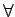

Inhalt Index DeskTop Bronstein

 Algebra und Diskrete Mathematik Logik Ausdrücke der Prädikatenlogik
Algebra und Diskrete Mathematik Logik Ausdrücke der Prädikatenlogik


Charakteristisch für die Prädikatenlogik ist die Verwendung von Quantoren, dem Allquantor (Generalisator)  und dem Existenzquantor (Partikularisator) Ist P ein einstelliges Prädikat, so wird die Aussage ,,Für jedes x aus X gilt P(x)`` mit und die Aussage ,,Es gibt ein x aus X, für das P(x) gilt`` mit bezeichnet. Durch die Quantifizierung entsteht aus dem einstelligen Prädikat P eine Aussage. Ist z.B.  der Individuenbereich der natürlichen Zahlen und bezeichnet P das (einstellige) Prädikat ,,n ist eine Primzahl``, so ist
der Individuenbereich der natürlichen Zahlen und bezeichnet P das (einstellige) Prädikat ,,n ist eine Primzahl``, so ist  eine falsche und eine wahre Aussage.
eine falsche und eine wahre Aussage.